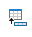
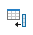

To insert rows and columns
- Place your mouse pointer in the table where you want to insert row(s) or column(s).
-
Do one of the following:
- Right-click and select Insert Rows... or Insert Columns.... Set the number of rows or columns you want to insert and select the position where you want them to be inserted.
- Select  Insert a new table row below the current one. or  Insert a new table column after the current one. in the Main toolbar.